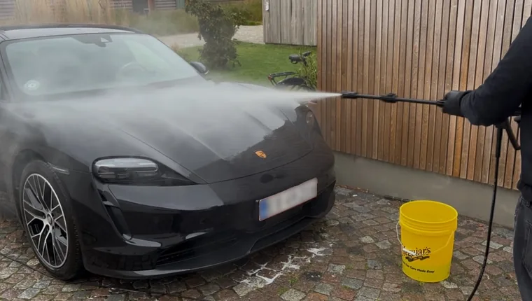
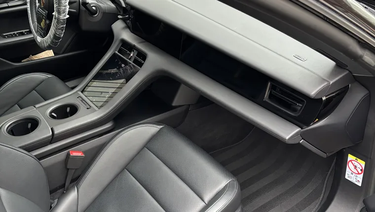
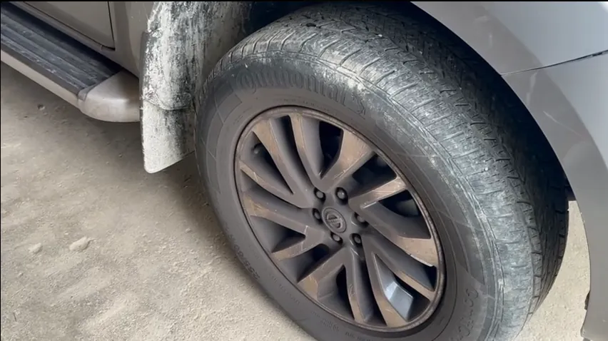
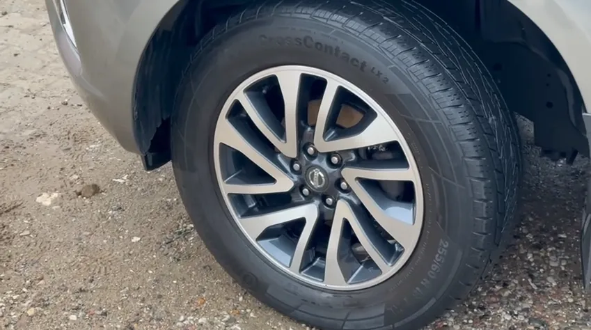
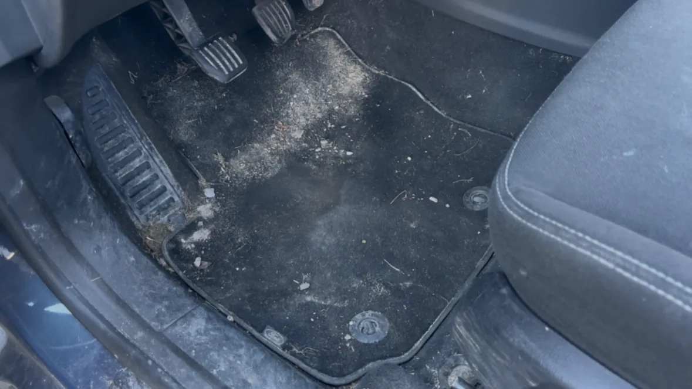
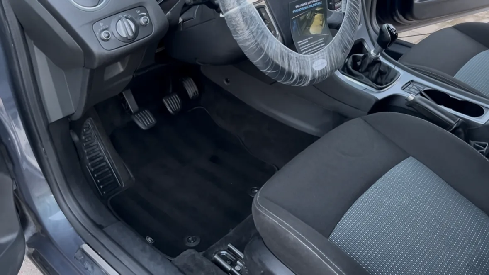

Svendborg · Tåsinge · Thurø


Priserne er startpriser for en lille bil. Hvilken størrelse er min bil?
"Super professionel og pålidelig bilrengøring. Bilen kom tilbage skinnende ren både indvendigt og udvendigt, og servicen var hurtig. Kan klart anbefales."
★★★★★"Jeg kan på det varmeste anbefale de gutter her,- de er venlige, effektive, arbejdsomme og yder en ekstrem professionel service. Tøv ikke med at tage fat i dem 🤝 det kommer vi ihvertfald til igen, når bilen trænger til en tur mere. Stærkt arbejde 👌"
★★★★★"Helt utroligt flot resultat. Vi kan derfor sende vores bedste anbefalinger og det er absolut ikke sidste gang at de bliver booket."
★★★★★"En rigtig god oplevelse, vi har fået 2 biler ordnet både indvendig og udvendig. Og det er bare helt i top. Ros til jer drenge."
★★★★★"Fantastisk godt arbejde, meget høflige unge mennesker. Overholder aftaler .. 5 stjerner herfra!"
★★★★★"Min bil har aldrig set bedre ud, virkelig pengene værd💪 kan stærkt anbefales
★★★★★
Før

Efter

Før

Efter
Hos Direkte Detailing tilbyder vi professionel bilrengøring i Svendborg og omegn. Vi specialiserer os i indvendig bilrengøring, udvendig bilvask og fuld bildetailing, så din bil fremstår skinnende ren og velplejet. Vores mobile service gør det nemt – vi kommer til dig, uanset om du bor i Svendborg, på Tåsinge eller Thurø.
Vi tilbyder grundig indvendig bilrengøring, der inkluderer støvsugning af sæder og gulve, rengøring af instrumentbord og paneler samt pleje af tekstil og læderoverflader. Din bil vil efter vores behandling føles frisk, ren og velholdt.
Vores udvendige bilvask fjerner effektivt snavs, salt og skidt fra lakken, hjul og karrosseri.
Med vores mobile bilrengøring sparer du tid og besvær. Vi medbringer alt udstyr og professionelle rengøringsmidler, og alt du skal sørge for, er adgang til vand og el.
En typisk bilrengøring tager mellem 2 og 4 timer, afhængig af bilens beskidthed, størrelse og tilkøb.
Ja, vi tilbyder mobil bilrengøring i Svendborg, Tåsinge, Thurø og omegn.
Prisen afhænger af hvilken service du vælger. Vores priser for udvendig vask starter fra 375 kr. Vores priser for indvendig rengøring starter fra 685 kr.